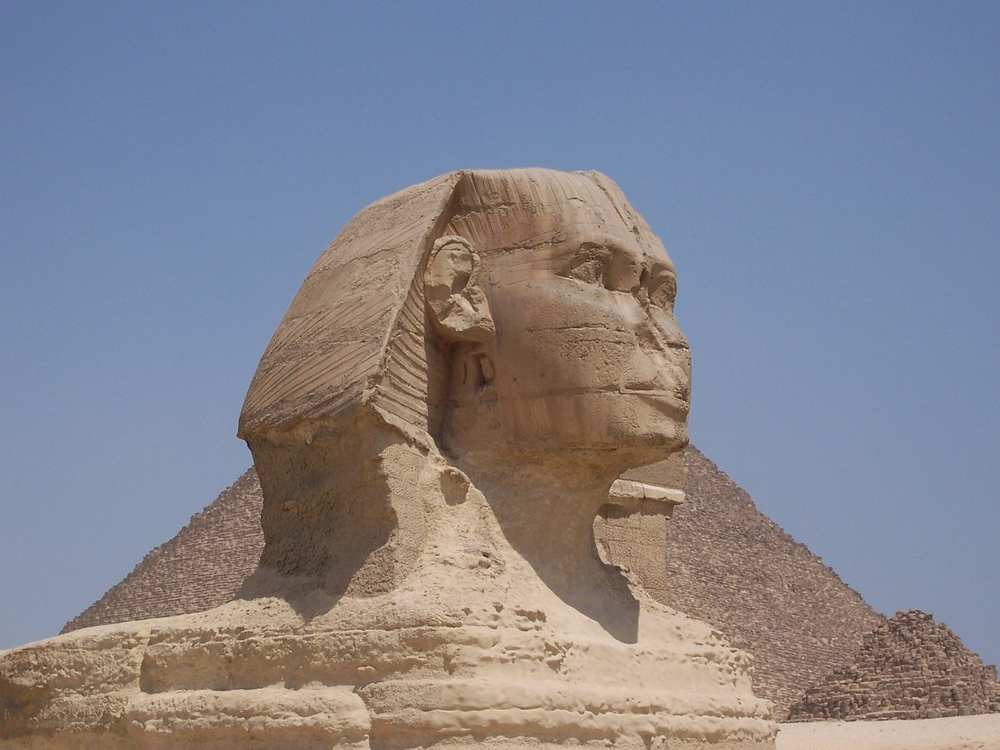

Egyptian Echoes: Unveiling Ancient Wonders for Modern Travelers
Abu Simbel

Greetings from Abu Simbel, a UNESCO World Heritage Site that exemplifies the magnificence and masterful architecture of ancient Egypt. Abu Simbel, which is famous for its exquisite temples that were carved into the cliffs during the reign of Pharaoh Ramses II, is located in southern Egypt on the banks of Lake Nasser. Come along with us as we take a trip back in time to discover the secrets and wonders of this renowned archaeological site.
The Temples of Ramses II
Pharaoh Ramses II, popularly referred to as Ramses the Great, and his queen Nefertari are honored in the twin temples of Abu Simbel. These temples, which were carved out of solid rock in the thirteenth century BCE, are evidence of Ramses II's desire to become eternally immortal along with his queen. The largest of the two, the Great Temple of Ramses II, is crowned at its entrance by four enormous, more than 20-meter-tall sculptures of the pharaoh. Ramses II's military might and heavenly status among the gods are portrayed in elaborate reliefs adorning the front.
The Temple of Hathor (Nefertari Temple)
.jpg)
Nefertari, the adored queen of Ramses II, is the subject of the smaller but no less magnificent Temple of Hathor, which is located next to the Great Temple. Six sculptures guard the entry of the facade, two of which are of Nefertari and four of which are of Ramses II. Inside, guests may take in the exquisitely preserved murals and reliefs that praise Nefertari's role as a celestial queen and exalt the goddess Hathor.
The Sun Festival at Abu Simbel
Twice a year, on February 22 and October 22, Abu Simbel hosts one of its most spectacular festivities. On certain days, the sanctum of the temple is illuminated by sunshine, casting shadows across the figure of Ptah, the god of darkness, and casting light on Ramses II and the gods seated within. This event represents the crowning of Ramses II and his alliance with Ra, the sun deity. Travelers from all over the world flock to Egypt during the Sun Festival to see this historic marvel and commemorate the country's rich cultural legacy.
The Rescue of Abu Simbel
Due to the building of the Aswan High Dam and the ensuing development of Lake Nasser, Abu Simbel was in danger of being submerged in the 1960s. The temples were meticulously deconstructed and moved to higher elevation as part of an unprecedented UNESCO effort to preserve them for future generations. This enormous rescue effort is proof of the dedication and collaboration of nations to protect the world's cultural heritage.
Exploring Abu Simbel Today
In addition to exploring the temples itself, visitors to Abu Simbel can now learn about the site's history and the efforts made to prevent floods by visiting the Visitor Center. The experience is improved by a multimedia display that provides a fuller knowledge of the reign of Ramses II and the significance of Abu Simbel in the political and religious scene of ancient Egypt.
Plan Your Journey to Abu Simbel
As you get ready to travel to Abu Simbel, take in the breathtaking history and grandeur of ancient Egypt. Whatever your interest—history, architecture, or just plain curiosity—Abu Simbel promises to be a once-in-a-lifetime experience that will inspire you with the accomplishments of one of the world's oldest civilizations.
An enduring reminder of the majesty, might, and creative brilliance of ancient Egypt is Abu Simbel. With its enormous statues, fine carvings, and deep cultural significance, it provides visitors with a unique window into the magnificence of the New Kingdom era. Come discover the mysteries of Abu Simbel and set off on a historical adventure that will leave you feeling fascinated and informed.
Giza Pyramids and Sphinx
Welcome to the Giza Plateau, a famous region outside of Cairo that has long enthralled tourists and academics. Here, in the middle of Egypt's desert, are the ageless Giza Pyramids and the mysterious Sphinx, symbols of the strength, creativity, and religious beliefs of the ancient Egyptian people.
The Great Pyramid of Giza

The Great Pyramid of Giza, sometimes referred to as the Pyramid of Khufu or Cheops, towers over the entire Giza complex. Constructed more than 4,500 years ago amid the Fourth Dynasty of the Old Kingdom, this enormous edifice stood as the highest man-made structure globally for more than 3,800 years. It is made up of millions of precisely matched limestone pieces that form a flawless pyramid shape, demonstrating the Egyptians' superior architectural and engineering skills. As they explore its interior rooms and tunnels, visitors can be astounded by its sheer immensity and wonder at the mystery surrounding its construction.
The Pyramid of Khafre and the Pyramid of Menkaure
The lesser Pyramid of Menkaure (Mycerinus) and the Pyramid of Khafre (Chephren) are located next to the Great Pyramid. Slightly smaller than Khufu's pyramid, the Khafre pyramid still has some of its original casing stones at the top, providing a window into the pyramid's past splendor. The three surrounding lesser pyramids dedicated to the queens and the granite exterior of the Pyramid of Menkaure, the smallest of the three great pyramids at Giza, serve as distinguishing features.
The Enigmatic Sphinx

Keeping watch over Giza Necropolis, the Great Sphinx of Giza, is a legendary figure that is thought to symbolize Pharaoh Khafre. It has the face of a pharaoh and the body of a lion. One of the biggest and oldest statues in the world, the Sphinx is sculpted from a single block of limestone and is 73 meters (240 feet) in length and 20 meters (66 feet) in height. As they consider its significance in ancient Egyptian religious beliefs and royal rituals, visitors can be astounded by its peaceful expression and minute intricacies.
The Solar Boat Museum
The Solar Boat Museum, which is located next to the Great Pyramid, is open to tourists. Inside is a restored ancient Egyptian boat that was found buried close to the pyramid complex. Khufu's spirit is said to have been transported to the afterlife by means of this boat, whose elaborate design and craftsmanship shed light on ancient Egyptian religious customs and marine technology.
Exploring the Giza Plateau
The Giza Plateau gives tourists the opportunity to learn more about the history and culture of ancient Egypt, going beyond the pyramids and Sphinx. The elaborately adorned walls and burial chambers of the nearby tombs of aristocrats and officials offer insights into the customs and beliefs of the ancient Egyptians. In addition to providing amazing views of Cairo and the adjacent desert scenery, the panoramic views from the plateau are especially stunning at sunrise or sunset.
Plan Your Journey to Giza
Enjoy the breathtaking history and magnificence of these historic sites as you get ready to travel to Giza. Regardless of your interest in history, architecture, or just plain curiosity, a visit to the Giza Pyramids and Sphinx is sure to leave you inspired by the accomplishments of one of the world's oldest civilizations.
As timeless reminders of Egypt's past, the Sphinx and Pyramids at Giza never cease to astound and motivate tourists from all over the world. With their enormous size, ethereal charm, and deep cultural significance, they provide insight into the pharaohs' mysteries and the enduring influence of ancient Egypt. Come discover the wonders of the Giza Plateau and experience firsthand the enchantment of these recognizable sites.
Luxor
Known as the "world's greatest open-air museum," Luxor is home to an astounding collection of ancient Egyptian treasures that have been preserved by the sands of time. Luxor, which is located on the east bank of the Nile River, is home to temples, tombs, and monuments that have fascinated tourists for millennia. Luxor is a living example of the majesty and heritage of the pharaohs.
The Temples of Karnak

One of the biggest religious complexes in the world, the Karnak Temple Complex, is a great place to start your trip in Luxor. Constructed over a millennium by consecutive pharaohs, Karnak is devoted to the divinity Amun-Ra, the most revered figure in ancient Egypt. Explore its massive columns, pylons, and finely carved reliefs, which show scenes of religious rites, divine gifts, and regal conquests. Highlights include the Avenue of Sphinxes, which formerly linked Karnak with the Luxor Temple, and the Great Hypostyle Hall, which boasts a forest of 134 enormous columns.
The Luxor Temple

The majestic Luxor Temple, a testament to the symmetry and proportion of Egyptian temple design, may be found upon crossing the Nile to the east bank. Originally connected to Karnak Temple by the Avenue of Sphinxes, a processional route adorned with sphinx statues, Luxor Temple was devoted to the god Amun-Min. Admire the enormous sculptures of Ramses II at the entryway, and discover the inner sanctuaries and chapels filled with colorful reliefs and elaborate hieroglyphics that illustrate the cosmology and mythology of ancient Egypt.
The Valley of the Kings

Go to the west bank of Luxor to explore the Valley of the Kings, which is home to royal tombs and secret treasures. During the New Kingdom era, the valley, carved into the desert rocks, functioned as a royal tomb for pharaohs and influential nobility. Enter the ornately decorated tombs, which are embellished with artwork that depict the afterlife and events from the Book of the Dead. The tomb of Ramses VI, known for its vibrant colors and well-preserved decorations, and the tomb of Tutankhamun, which was found nearly intact in 1922, are among the highlights.
The Mortuary Temple of Hatshepsut
The Hatshepsut Mortuary Temple is a nearby monument honoring one of the greatest female pharaohs in Egyptian history. This graceful temple, perched atop the Deir el-Bahari cliffs, has shrines honoring the gods Anubis and Hathor as well as terraced colonnades and large gardens. Discover the exquisitely preserved reliefs that portray Hatshepsut's divine conception and military campaigns, and be in awe of the building's magnificence set against the Theban Hills backdrop.
The Colossi of Memnon
Make a stop at the Colossi of Memnon, two imposing figures that formerly guarded the entrance to Amenhotep III's funeral temple, on your route back to Luxor. These enormous statues show the pharaoh sitting on his throne, watching the rising sun across the Nile while acting as silent sentinels.
Plan Your Journey to Luxor
Encounter the breathtaking history and magnificence of ancient Egypt as you get ready to travel to Luxor. Whatever your interest—history, architecture, or just plain curiosity—Luxor offers a once-in-a-lifetime experience that will inspire you with the accomplishments of one of the world's oldest civilizations.
Every stone in Luxor's majestic old city offers a tale of gods, pharaohs, and the lingering legacy of ancient Egypt. Discover the secrets of one of the greatest civilizations in history by taking a trip back in time to Luxor, home of beautiful temples, royal tombs, and striking monuments. Come see the beauties of Luxor and set off on a historical adventure that will leave you feeling both enlightened and charmed.
Saqqara
Greetings from Saqqara, an archaeological treasure situated close to Cairo, Egypt, on the western bank of the Nile River. This enormous necropolis is well-known for its historic tombs, pyramids, and burial complexes, which provide tourists with an insight into the illustrious past and spiritual practices of ancient Egypt. Discover the mysteries of Saqqara with us as we take you on a historical adventure.
The Step Pyramid of Djoser

The Step Pyramid of Djoser, widely regarded as the earliest stone pyramid in Egypt and a pioneering feat of ancient architecture, is the main reason for Saqqara's fame. The Step Pyramid, which was constructed by the architect Imhotep during the Third Dynasty, is a witness to the development of royal tomb building from straightforward mastabas (flat-roofed tombs) to imposing pyramids. The complex around the pyramid is open for exploration by guests and consists of temples, courtyards, and halls decorated with elaborate reliefs and hieroglyphics.
The Mastaba Tombs
Many mastabas, the customary tombs of ancient Egyptian officials and nobles, may also be found at Saqqara. These mastabas, which are made to hold the dead and their possessions for all eternity, are distinguished by their rectangular shape, sloping sides, and flat roofs. The most famous mastabas are those that bear the ornate decorations and scenes that portray religious ceremonies and everyday life, and they belong to prominent officials like Mereruka, Ti, and Kagemni.
The Serapeum of Saqqara
The Serapeum, a vast subterranean complex thought to have functioned as a burial cemetery for the revered Apis bulls, thought to be manifestations of the god Ptah, is among the most mysterious locations in Saqqara. The mummified bones of the Apis bulls were previously kept in large granite sarcophagi located along a series of lengthy tunnels that are carved out of solid rock, making up the Serapeum. These massive sarcophagi demonstrate the ancient Egyptians' proficiency with stone-cutting and transportation methods.
The Imhotep Museum
The Imhotep Museum at Saqqara, which opened its doors in 2006, gives visitors a better understanding of the site's significance, history, and archaeology. The museum, which bears the name of the renowned Step Pyramid architect, contains a variety of artifacts uncovered during Saqqara excavations, including statues, ceramics, tools, and architectural features. Multimedia presentations and interactive exhibits bring ancient Saqqara to life by giving the monuments and the people who constructed and lived there perspective.
Exploring Saqqara Today
The religious rituals, social organization, and artistic accomplishments of ancient Egypt are being revealed by the ongoing excavations and discoveries at Saqqara, an active archaeological site even today. Explore the desert scenery, take in the imposing pyramids and tombs, and ponder the mystery surrounding this ancient burial site that provided Egypt's nobility with a portal to the afterlife.
Plan Your Journey to Saqqara
Immerse yourself in the breathtaking history and magnificence of ancient Egypt as you get ready to travel to Saqqara. Whatever your interest—history, archaeology, or just plain curiosity—Saqqara promises to be a once-in-a-lifetime experience that will motivate you with the accomplishments of one of the oldest civilizations in human history.
Saqqara is a monument to the creativity, spirituality, and inventiveness of ancient Egyptians. With its colossal pyramids, elaborate tombs, and intriguing archaeological discoveries, it provides visitors with a singular chance to journey back in time and investigate the customs and beliefs that molded one of the greatest civilizations in history. Come discover the mysteries of Saqqara and set off on a historical adventure that will leave you feeling both enlightened and captivated.